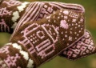

|
||
Premium Patterns Wintry Mix Mitts Love Bytes HawkeyeFree Patterns Kiddie Cadet Summerlin Ruffled Scarf Seamless DS Sock Simply Seamless Pouch Myriads of MushroomsExtras DIY Mitten Blocker Felt Patch Tutorial Yarn Dyeing Tutorial Needle Pouches Knitting Journal |
About KathrynIvy.comKathrynivy.com was created by two sisters, Alice and Grace Schnebly, with the goal of providing information and inspiration to other knitters and crafters for their own projects. You will see original content unavailable elsewhere—honest, in-depth book and yarn reviews, tips, modifications, and illustrated tutorials. We encourage you to explore all the areas of our site, and visit often. Whether it’s a review, pattern, contest, or a blog about our recent projects, there will always be something new to find. We also have some big ideas in the wings, so stayed tuned! We will be posting free and for-purchase patterns that we have designed and written, and hope you will enjoy these as much as we have enjoyed the patterns from other knit-bloggers. We would also like to thank our website designer, Si, without whom this site would not be possible. He also gets extra bonus points for putting up with Grace's yarn and fabric addictions! Please don't hesitate to bookmark us and come back often! We would love to hear comments and feedback from fellow knitters and crafters! AliceI live in Las Vegas, Nevada, where I spend most of my time running after my 2 year old daughter,Camdyn, as well as my pets—a Chihuahua and four cats. I have been crafting from an early age starting with paper crafting, sewing, and drawing. My most recent crafty undertaking has been knitting, which has consumed most of my time from the minute I picked up my needles. The portability and ease of knitting has fueled my love for this craft, and I don’t see an end in sight. I enjoy teaching others to knit, and taught classes at a LYS on beginning knitting and other techniques. My favorite classes were beginner classes. It is really satisfying to teach someone such a fabulous and lifelong hobby. My most rewarding experience has been teaching my younger sister, Grace, to knit. It is so nice to have someone to run ideas by, share cool finds, and help me when I need it. She is a natural at this! (Plus, knitters give the best gifts, don’t you think?) Although I am not the most experienced knitter, I really enjoy throwing myself into projects of all skill levels and learning new things as I go. This year, I hope to design more items and learn more techniques—like socks and color work—as well as find projects for my HUGE stash. I love supporting and getting inspiration from other crafters in blogland. Hopefully you will find the same in our site, with our free patterns, yarn and book reviews, and other knitter-chatter. GraceLike my sister, I have been crafting and sewing from an early age. I was involved in 4-H and entered all sorts of projects in our local county and state fairs. My summers were full of sewing, drawing, painting, paper crafts, photography, and baking, as well as many others. Surprisingly, with all the craftiness around, I never learned how to knit until recently. When Alice taught me in 2006, my life changed. I had wanted to learn how to knit so I could give a hat to my friend as a present, but it has turned into an obsession. Some of my favorite projects are bags, hats, and toys. I also especially love felting. The second project I ever made was a felted purse and I have been hooked on felting ever since! It is so exciting to see how an item can change after felting and it is a technique perfect for beginners, yet is still enjoyable for advanced knitters. I would definitely call myself a fearless knitter—I love to test out new patterns and dive right into a project without regard to the level of difficulty. I am willing to try almost anything whether it’s felting, lace, color work, or a sweater for my boyfriend—okay, maybe I won’t go that far! I have also been extremely interested in learning how to spin and dye my own yarn. This year I plan on joining a spinning group here in Boston and hopefully buying my own spinning wheel as well. My ultimate dream is to own and run a fiber farm back on the ranch I grew up on in Ellensburg, Washington. I am also interested in sewing, and have many sewing projects lined up this year! I love beautifully designed fabrics, and my favorite designer is Amy Butler. In fact, my large collection of fabric has consumed almost every storage space in my apartment. Although I started sewing at a young age, I stopped for a while for no reason at all. I want to get back into sewing like I used to! I moved to Boston, Massachusetts recently from Seattle, Washington with my boyfriend Si and our three cats. After high school I attended the University of Washington, and received a degree in Earth and Space Sciences. Other interests and hobbies of mine include photography, watercolor painting, drawing, traveling, camping, and music. I would like to give a special thanks to Si for creating this website for us. He has put in so many hours helping us out, and we really couldn’t do this without him. |
   Recent ReviewsRecent Posts
 Our Favorites
|
| © 2007 KathrynIvy.com | ||